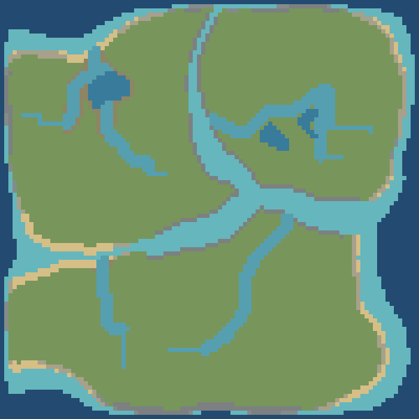
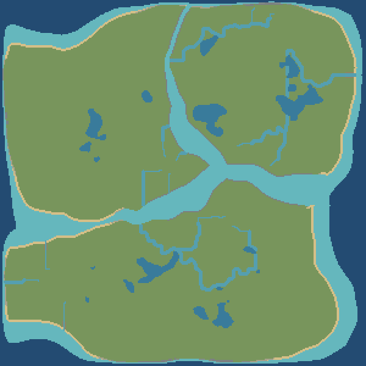
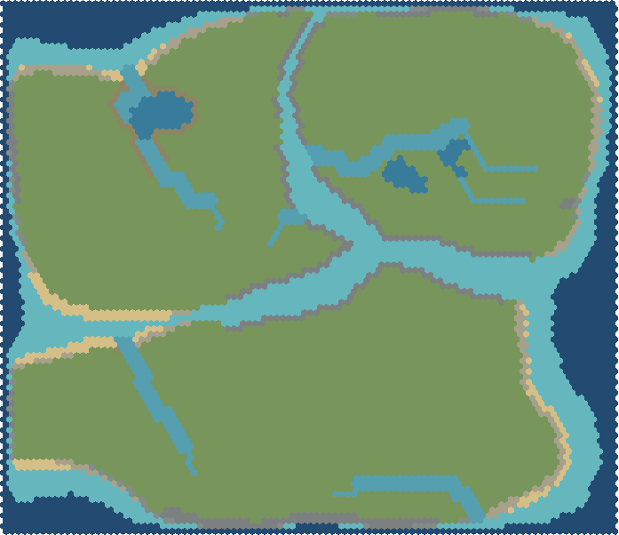
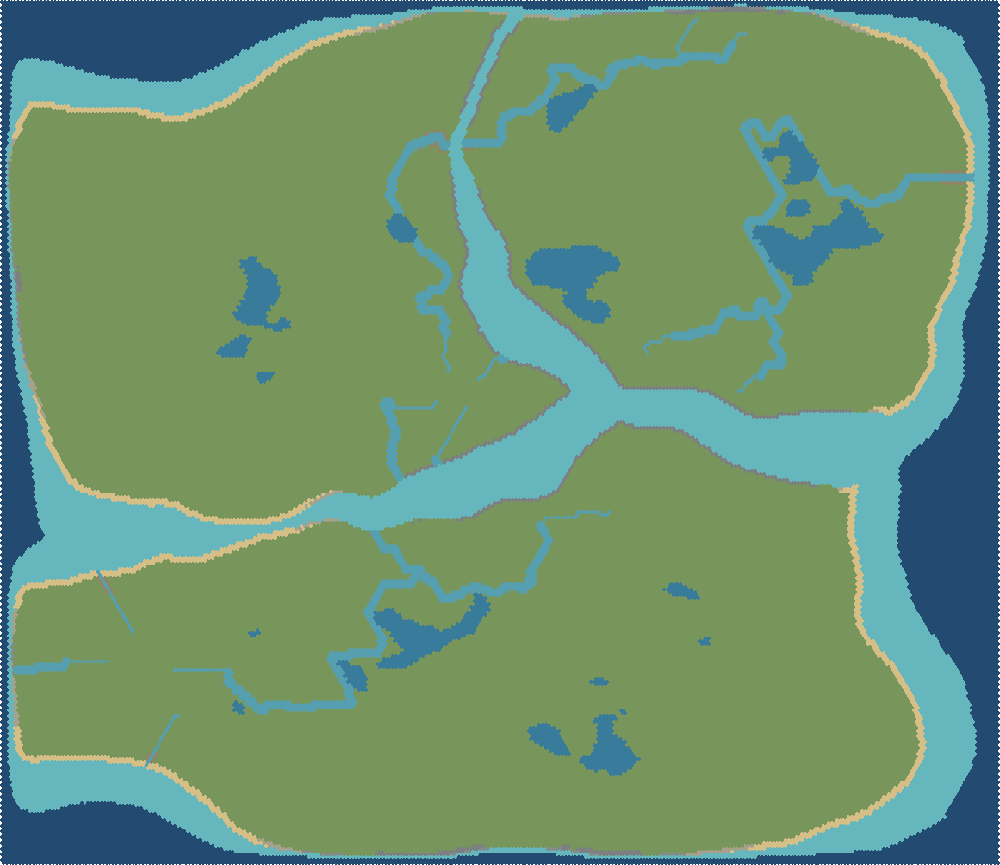

Квадратная сетка · 100×100
Мелководье: 53,7% морских клеток · 1 342 клеток

Песчаный берегСкалистый берегГалечный берегРечная поймаМореОзероРекаЛугаМелководьеСкалы и утёсы
Квадратная сетка · 300×300
Мелководье: 55,8% морских клеток · 12 564 клеток

Песчаный берегСкалистый берегГалечный берегРечная поймаМореОзероРекаЛугаМелководьеСкалы и утёсы
Шестиугольная сетка · 100×100
Мелководье: 54,5% морских клеток · 1 363 клеток

Песчаный берегСкалистый берегГалечный берегРечная поймаМореОзероРекаЛугаМелководьеСкалы и утёсы
Шестиугольная сетка · 300×300
Мелководье: 56,7% морских клеток · 12 767 клеток

Песчаный берегСкалистый берегГалечный берегРечная поймаМореОзероРекаЛугаМелководьеСкалы и утёсы
Светло-бирюзовое — мелкая морская вода. Глубина и расстояние до берега определяют ширину этой зоны.
Доля суши включает внутреннюю пресную воду. На каждой карте — три отдельных острова. Нажмите на карту, чтобы открыть исходный PNG.